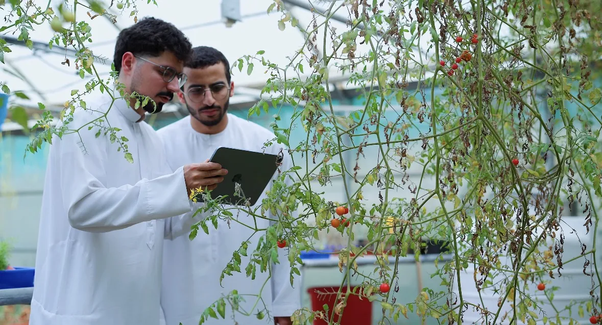
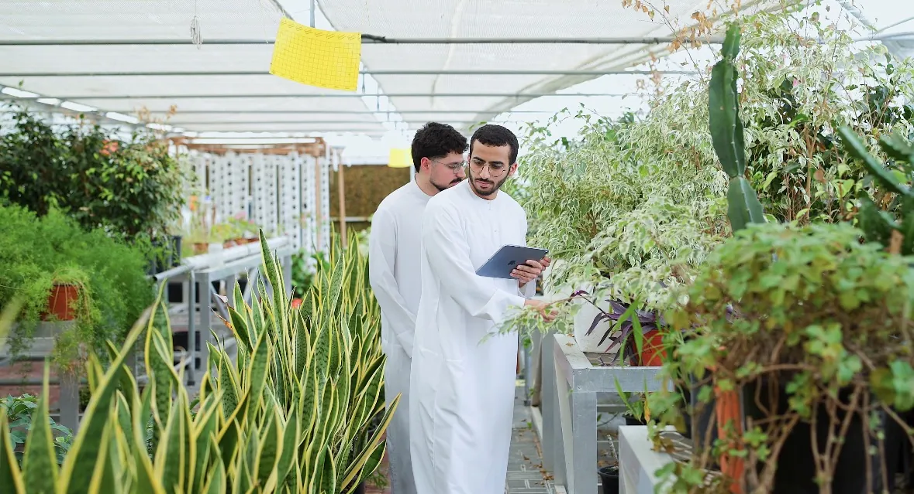

CropSage
TwinView is a dual-view handheld imaging system that returns a diagnosis, its severity, the visual evidence and a recommended action in seconds. It won 100,000 AED from the R2C program. We are now commercializing it, shaping the product around the problems growers actually have, and validating it with farmers in greenhouses in Al Ain. I founded the project and lead its research.

